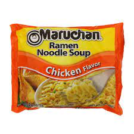

Instant Ramen Noodles

Description
They're hot. They're fast. They're incredibly high in sodium.
Ramen noodles have been satisfying
teenagers, diners on a budget, and sad office people for decades.
Increasingly decadent ramen dishes
have become all the rage, but I still stand behind the tried and true instant variety.
Prepare for the only
noods you'll be getting on this website.
Ingredients
-
A package of instant ramen. There are many flavors available, but you can't go wrong with chicken.
There are also plenty of brands to choose from. My mom always bought Maruchan, but I'm sure they're all
equally delectable.
-
A pot of water
-
Optional ingredient: hot sauce. Or really whatever the hell else you want to throw in the bowl.
Steps
-
Fill a small to medium sized pot with water and crank your cook top up to high heat.
-
Once the water is boiling, open the ramen package by breaking the noodle block in half. Those noodles are too
damn long anyway and it makes a very satisfying pop when done correctly. Make sure you remove the silver flavor
packet from the packaging. Plop those noodle halves right into the boiling water.
-
Cook for some amount of time. I don't know. It's been a while. Read the package. I'd probably reduce the heat to medium, too.
-
Once the package says time's up, drain the noodles a bit. I still like a little broth, but because I didn't tell you
how much water to put in the pot, you probably put way too much.
-
Once you have the desired amount of broth, tear open that flavor packet and go to town. You can also put in the hot
sauce and any other ingredients you can think of.
-
Eat and enjoy! Probably should suspend each bit over the bowl for a few minutes and give the noods a hearty blow or two
before sticking the fork in your mouth. Those things are hot!
Return to home